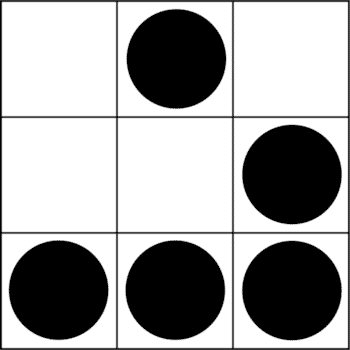

Welcome to iago.gal

Who am I?
My name is Iago aka Hacklego. I'm a Cyber Security Researcher and Cryptography enthusiast.
I'm spelialised in Threat Hunting and Cyber Threat Intelligence.
PhD Student in Computer Science working on feature engineering to improve cyber security datasets.
Founder and member of Hackliza a galician communitty (in english and galician) about cyber security, maths, free software and other stuff.
Member of the team "Shandyman and the Three Half Pints" winner of 3 global events to find missing people using OSINT (Open Source Intelligence).
And... of course a big fan of XKCD.
Projects
Publications and collaborations
- Pegasus (ES) a collaboration where I was a SME for technical details in "La bonisllista" a weekly newsletter with +10k subscribers.